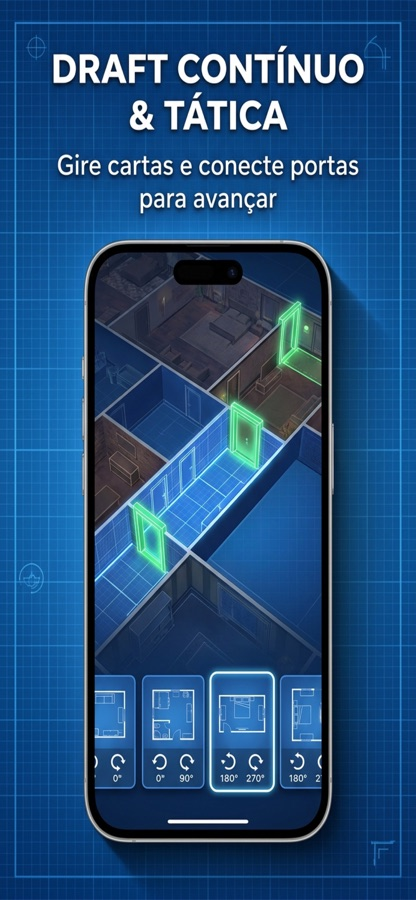
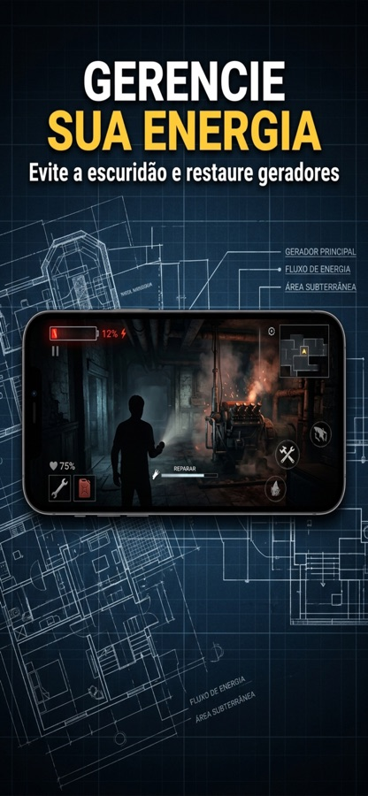
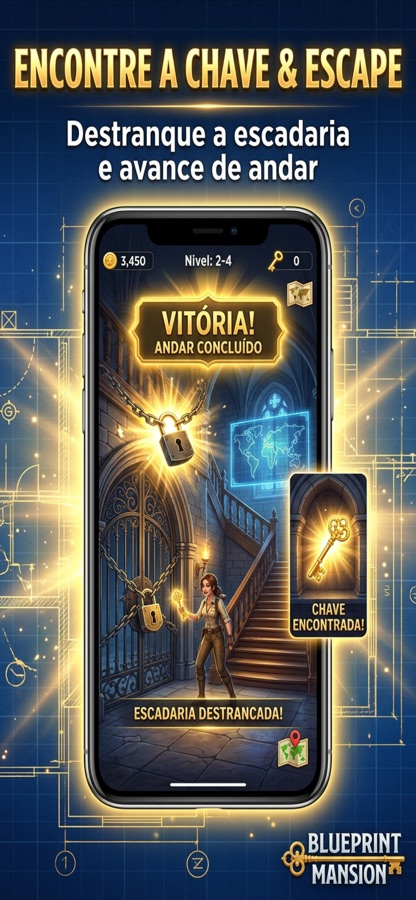

Blueprint Mansion
Desenhe a sua própria fuga.
Você está preso numa mansão que ainda não existe. Cada cômodo que desenha no caderno de plantas ganha vida na hora: gire as cartas, alinhe as portas, administre a carga da lanterna e encontre a saída antes que a estrutura colapse. Quando a energia acaba, a run acaba — mas as moedas ficam para as melhorias globais.


Explore, projete, sobreviva.
O loop é curto e tenso: a cada porta aberta, você escolhe o próximo cômodo entre opções geradas na hora.
Abra uma porta
Ao tocar numa porta de fronteira, o jogo oferece cartas de cômodos com formato, custo e conectores diferentes.
Gire e encaixe
Rode a carta em 0°, 90°, 180° ou 270°. Paredes não podem bloquear portas já existentes — um encaixe errado fecha o seu caminho.
Chegue ao objetivo
Encontre o cofre, a escadaria ou a relíquia do andar antes que a lanterna apague. Salas sinérgicas, como gerador ao lado da segurança, revelam a planta do quadrante.
Tudo o que torna a experiência tática única.
Arquitetura tática
Cada cômodo é uma carta com portas em posições fixas. Alinhar com precisão é a diferença entre uma rota de fuga e um beco sem saída.
Gestão de energia
A lanterna consome carga a cada cômodo projetado. Encontre salas com geradores a vapor antes que a bateria zere.
Protocolo de Crise diário
A cada 24 horas, uma operação inédita gerada deterministicamente, igual para todos, com modificadores extremos, placar e streak.
Expansões temáticas
Desbloqueie a Fortaleza das Relíquias com Sir Galahad ou adentre as alas do Sanatório St. Jude com a Dra. Helen Vance.
Progressão entre runs
Colapsou? As moedas ficam. Invista em melhorias globais e volte mais preparado para o próximo andar.
Trilha imersiva
Áudio atmosférico, passos que ecoam e uma trilha de mistério que acompanha o ritmo da exploração.
Visão da planta.



Um labirinto novo a cada 24 horas.
O desafio diário é gerado a partir da data, então todo mundo enfrenta a mesma mansão com os mesmos modificadores de crise. Dispute a melhor pontuação no Game Center ou no Play Games e mantenha a sua sequência viva.
- Mesmo mapa para todos os jogadores do mundo
- Modificadores de crise: falha elétrica, patrulhas, plantas roubadas
- Placar mundial e streak diário
- Uma tentativa por dia — pense antes de desenhar
Precisa de ajuda ou encontrou um bug?
Escreva contando o que aconteceu e em qual aparelho. Costumo responder em até 48 horas em dias úteis.